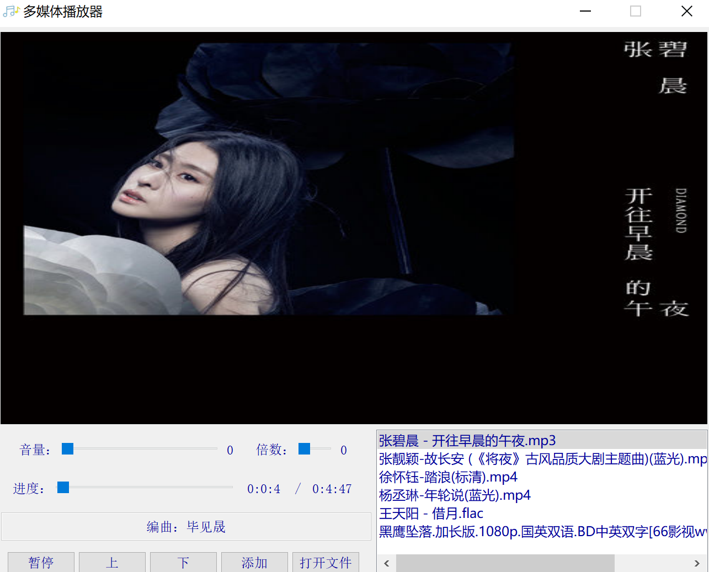
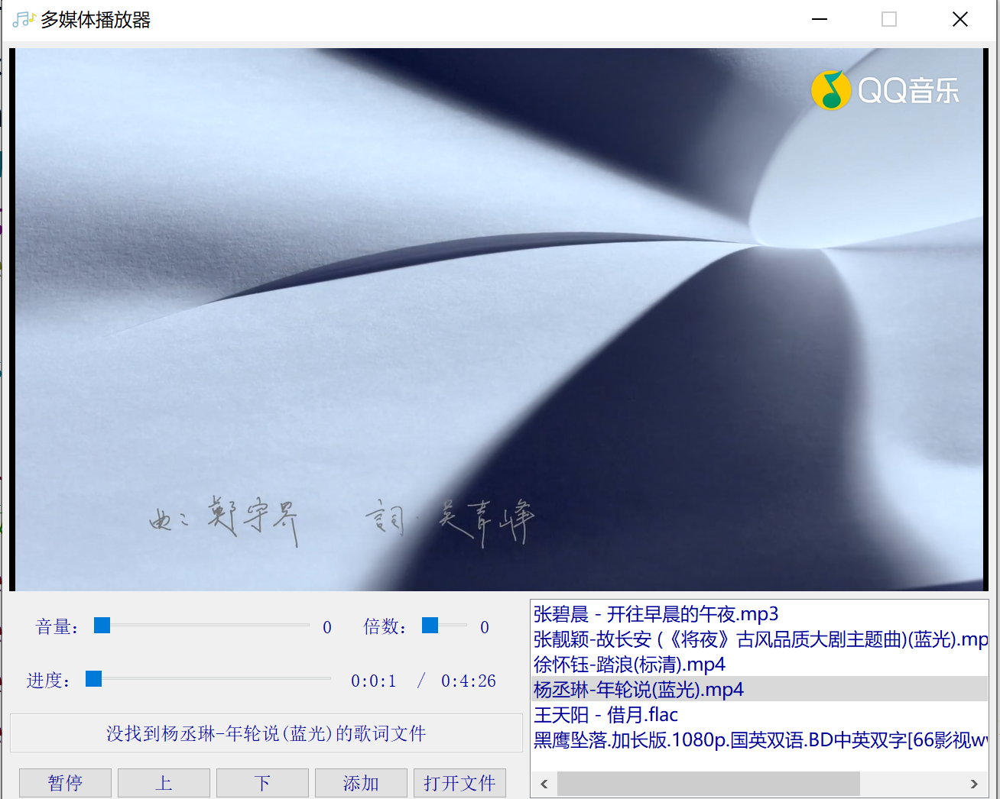

1.简介
- QMediaPlayer是Qt自带的多媒体播放器，该播放器可以使用各种编解码器播放音视频文件
- 涉及到的类有QMediaPlayer、QMediaPlaylist、QVideoWidget等
- 使用LAVF Filters解码器： 提取码: gm24
2.QMediaPlayer
QMediaPlayer类的player播放状态：State
| 状态枚举名称 | 枚举值 | 说明 |
|---|---|---|
| StoppedState | 0 | 播放停止状态 |
| PlayingState | 1 | 播放状态 |
| PausedState | 2 | 播放暂停状态 |
QMediaPlayer类的媒体状态：MediaStatus
| 状态枚举名称 | 枚举值 | 说明 |
|---|---|---|
| UnknownMediaStatus | 0 | 未知状态 |
| NoMedia | 1 | 无媒体文件，player处于StoppedState |
| LoadingMedia | 2 | 媒体文件加载中，player可以处于任何状态 |
| LoadedMedia | 3 | 媒体文件已加载，player处于StoppedState |
| StalledMedia | 4 | 媒体处于延迟或者暂时的中断状态，palyer处于 PlayingState或者PausedState |
| BufferingMedia | 5 | 媒体正在缓冲数据，palyer处于 PlayingState或者PausedState |
| BufferedMedia | 6 | 媒体缓冲数据完成，palyer处于 PlayingState或者PausedState |
| EndOfMedia | 7 | 媒体结束，player处于StoppedState |
| InvalidMedia | 8 | 非法的媒体文件，player处于StoppedState |
QMediaPlayer类的player播放标志位：Flags
| 状态枚举名称 | 枚举值 | 说明 |
|---|---|---|
| LowLatency | 1 | 播放未压缩的音频数据，播放表现为低延时，主要播放beeps, ringtones等 |
| StreamPlayback | 2 | 播放基于 QIODevice构建的媒体文件，QMediaPlayer或自动选择支持的流进行播放 |
| VideoSurface | 4 | 渲染视频到QAbstractVideoSurface output |
QMediaPlayer类的player错误标志位：Error
| 状态枚举名称 | 枚举值 | 说明 |
|---|---|---|
| NoError | 0 | 无错误 |
| ResourceError | 1 | 媒体源错误 |
| FormatError | 2 | 格式错误，播放可能会丢失音频或者视频 |
| NetworkError | 3 | 网络错误 |
| AccessDeniedError | 4 | 访问权限错误 |
| ServiceMissingError | 5 | 服务丢失错误 |
QMediaPlayer类的属性：
| 属性名称 | 取值类型 | 说明 | 访问函数 |
|---|---|---|---|
| audioAvailable | const bool | 音频是否可用，audioAvailableChanged信号函数用于监控其状态 | bool isAudioAvailable() const |
| audioRole | QAudio::Role | 音频流播放role | QAudio::Role audioRole() const，void setAudioRole(QAudio::Role audioRole) |
| bufferStatus | const int | 缓冲数据的百分比，在开始播放或者回复播放之前 | int bufferStatus() const， void bufferStatusChanged(int percentFilled) |
| currentMedia | const QMediaContent | 当前激活的媒体，在使用Playlist时，可能与mdia属性不同 | QMediaContent currentMedia() const， void currentMediaChanged(const QMediaContent &media) |
| duration | const qint64 | currentMedia的播放时长，单位ms | qint64 duration() const， void durationChanged(qint64 duration) |
| media | QMediaContent | 激活的并被使用的媒体源 | QMediaContent media() const， void setMedia(const QMediaContent &media, QIODevice *stream = nullptr)， void mediaChanged(const QMediaContent &media) |
| playbackRate | qreal | 当前媒体的播放速度，默认为1.0 | qreal playbackRate() const， void setPlaybackRate(qreal rate)， void playbackRateChanged(qreal rate) |
| playlist | QMediaPlaylist* | 播放列表 | QMediaPlaylist * playlist() const， void setPlaylist(QMediaPlaylist *playlist)， |
| volume | int | 音量，取值范围0—100 | int volume() const， void setVolume(int volume)， void volumeChanged(int volume |
2.1 播放音频步骤
1 | //播放器对象 |
2.2 播放视频频步骤
QMediaPlayer要播放视频需要使用辅助类QVideoWidget、QGraphicsVideoItem，将辅助类对象设置为QMediaPlayer的视频输出窗口，就可以播放视频。
1 | //播放器对象，播放队列对象，显示器对象 |
3.QMediaPlaylist
- QMediaPlaylist类，可以为QMediaPlayer提供一个播放列表，它其实是QMediaContent对象的列表，
- QMediaPlayer通过函数setPlayList来设置一个播放列表
- QMediaPlaylist通过函数addMedia想播放列表添加一个媒体文件
QMediaPlaylist类的播放模式：PlaybackMode
| 状态枚举名称 | 枚举值 | 说明 |
|---|---|---|
| CurrentItemOnce | 0 | 当前选中的媒体文件仅播放一次 |
| CurrentItemInLoop | 1 | 当前选中的媒体文件循环播放 |
| Sequential | 2 | 从当前选中的媒体文件开始，列表中的文件顺序播放一次直到最后一个文件 |
| Loop | 3 | 列表中的文件顺序循环播放 |
| Random | 4 | 列表中的文件随机播放 |
QMediaPlaylist属性
| 名称 | 类型 | 说明 |
|---|---|---|
| currentIndex | int | 当前播放的媒体文件在列表中的索引 |
| currentMedia | const QMediaContent | 当前选中的媒体文件 |
| palybackMode | QMediaPlaylist::PlaybackMode | 从当前选中的媒体文件开始，列表中的文件顺序播放一次直到最后一个文件 |
QMediaPlaylist函数
| 返回值类型 | 函数名称 | 描述说明 |
|---|---|---|
| bool | addMedia(const QMediaContent &content) | Public Functions，列表添加单个媒体文件 |
| bool | addMedia(const QList &items) | Public Functions，列表添加多个媒体文件 |
| int | currentIndex() const | 获得当前播放媒体的索引 |
| QMediaContent | currentMedia() const | 获得当前播放的媒体文件 |
| QMediaPlaylist::Error | error() const | 列表错误状态 |
| QString | errorString() const | 播放列表错误字符串信息 |
| bool | insertMedia(int pos, const QMediaContent &content) | 向播放列表插入一个媒体文件 |
| bool | insertMedia(int pos, const QList &items) | 向播放列表插入多个媒体文件 |
| bool | isEmpty() const | 清空列表 |
| bool | isReadOnly() const | 清空列表 |
| void | load(const QNetworkRequest &request, const char *format = nullptr) | 加载网络媒体 |
| void | load(const QUrl &location, const char *format = nullptr) | 加载本地媒体文件 |
| void | load(QIODevice *device, const char *format = nullptr) | 加载IO设备文件 |
| QMediaContent | media(int index) const | 获得指定索引的媒体文件 |
| int | mediaCount() const | 统计播放列表的文件数量 |
| bool | moveMedia(int from, int to) | 根据位置参数移动媒体文件 |
| int | nextIndex(int steps = 1) const | 当前播放文件的下一个文件索引 |
| PlaybackMode | playbackMode() const | 获取列表播放模式 |
| int | previousIndex(int steps = 1) const | 当前播放文件的上一个文件索引 |
| bool | removeMedia(int pos) | 删除列表中指定位置的文件 |
| bool | removeMedia(int start, int end) | 删除列表中start到end之间的文件 |
| bool | save(const QUrl &location, const char *format = nullptr) | 保存列表QUrl 指定位置 |
| bool | save(QIODevice *device, const char *format) | 保存列表到IO设备 |
| void | setPlaybackMode(QMediaPlaylist::PlaybackMode mode) | 设置列表播放模式 |
QMediaPlaylist槽
| 返回值类型 | 函数名称 | 描述说明 |
|---|---|---|
| void | next() | 下一个文件 |
| void | previous() | 上一个文件 |
| void | setCurrentIndex(int playlistPosition) | 设置当前播放媒体的索引 |
| void | shuffle() | 媒体顺序洗牌，重建媒体的索引 |
QMediaPlaylist信号
| 返回值类型 | 函数名称 | 描述说明 |
|---|---|---|
| void | currentIndexChanged(int position) | 当前索引改变信号 |
| void | currentMediaChanged(const QMediaContent &content) | 当前媒体文件改变信号 |
| void | loadFailed() | 加载失败信号 |
| void | loaded() | 加载完成信号 |
| void | mediaAboutToBeInserted(int start, int end) | 媒体即将被插入信号 |
| void | mediaAboutToBeRemoved(int start, int end) | 媒体即将被删除信号 |
| void | mediaChanged(int start, int end) | 媒体文件改变信号 |
| void | mediaInserted(int start, int end) | 媒体文件插入信号 |
| void | mediaRemoved(int start, int end) | 媒体文件删除信号 |
| void | playbackModeChanged(QMediaPlaylist::PlaybackMode mode) | 列表播放模式改变信号 |
4.QVideoWidget
QVideoWidget是一个用来展示视频的类，需要先定义一个QMediaPlayer对象，然后将QMediaPlayer的VideoOutput设置为QVideoWidget对象即可
QVideoWidget属性
| 名称 | 类型 | 说明 |
|---|---|---|
| aspectRatioMode : | Qt::AspectRatioMode | 屏幕高宽比 |
| brightness | int | 亮度 |
| contrast | int | 对比度 |
| fullScreen | bool | 是否全屏 |
| hue | int | 色调 |
| mediaObject | QMediaObject* const | 视频媒体对象 |
| saturation | int | 饱和度 |
QVideoWidget函数
| 返回值类型 | 函数名称 | 描述说明 |
|---|---|---|
| Qt::AspectRatioMode | aspectRatioMode() const | 获取视频画面宽高比 |
| int | saturation() const | 获取饱和度 |
| int | brightness() const | 获取亮度 |
| int | contrast() const | 获取对比度 |
| int | hue() const | 获取色调 |
| bool | isFullScreen() const | 获取全屏状态 |
QVideoWidget槽
| 返回值类型 | 函数名称 | 描述说明 |
|---|---|---|
| void | setAspectRatioMode(Qt::AspectRatioMode mode) | 设置宽高比 |
| void | setBrightness(int brightness) | 设置亮度 |
| void | setContrast(int contrast) | 设置对比度 |
| void | setFullScreen(bool fullScreen) | 设置全屏状态 |
| void | setHue(int hue) | 设置色调 |
| void | setSaturation(int saturation) | 设置饱和度 |
QMediaPlaylist信号
| 返回值类型 | 函数名称 | 描述说明 |
|---|---|---|
| void | brightnessChanged(int brightness) | 亮度改变信号 |
| void | contrastChanged(int contrast) | 对比度改变信号 |
| void | fullScreenChanged(bool fullScreen) | 全屏状态信号 |
| void | hueChanged(int hue) | 色调改变信号 |
| void | saturationChanged(int saturation) | 饱和度改变信号 |
5.demo
1 | 在工程文件中添加，QT += multimedia （多媒体），QT += multimediawidgets |
widget.h
1 |
|
widget.cpp
1 |
|

